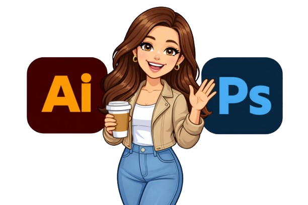

Аз съм ученичка, в 11 клас с профил „Графичен дизайн“. Обичам да създавам различни проекти – лога, менюта, плакати и рекламни материали, като винаги се стремя към изчистен, модерен и въздействащ дизайн. В работата си комбинирам креативност с внимание към детайла и търся баланс между естетика и функционалност. Стремя се постоянно да развивам уменията си, да уча нови техники и да надграждам знанията си в сферата на графичния дизайн. Тази година главният ми проект беше за сватбена агенция, включваща изработка на лого, папки, витрини и още, което ще можете да разгледате.
Мога да работя с:
> Adobe Photoshop и Adobe Illustrator.
> Създавам и обработвам изображения
>правя лога
> банери и различни дизайни.
Имам добри умения и се старая да изпълнявам проектите качествено.
